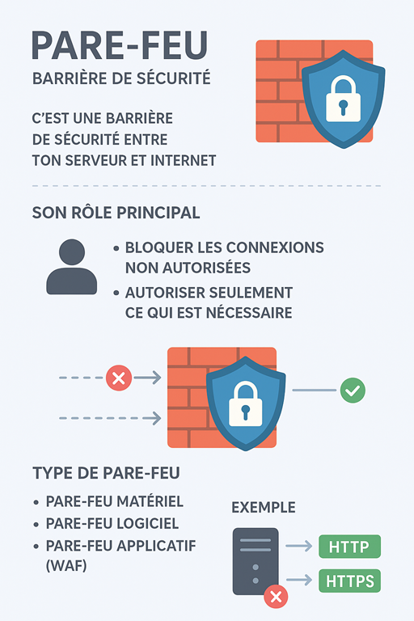

Chapitre VI : Le Pare-feu (Firewall)
🔥 1. Qu’est-ce qu’un pare-feu ?
- C’est une barrière de sécurité entre ton serveur (ou ton ordinateur) et Internet
- Il contrôle le trafic réseau : décide ce qui est autorisé à entrer/sortir
👉 Comme un vigile à l’entrée d’un bâtiment
🛡️ 2. Son rôle principal
- Bloquer les connexions non autorisées (ex. pirates)
- Autoriser seulement ce qui est nécessaire (ex. HTTP/HTTPS pour un site web)
- Surveiller les flux pour détecter des comportements suspects
📖 3. Analogie simple
Imagine un immeuble :
- Le pare-feu = le vigile à l’entrée
- Il laisse entrer les locataires connus (trafic autorisé)
- Il bloque les inconnus douteux (trafic interdit)
🔑 4. Types de pare-feu
- Pare-feu matériel → boîtier dédié (souvent en entreprise)
- Pare-feu logiciel → installé sur un serveur ou un PC (ex. iptables sous Linux, Windows Firewall)
- Pare-feu applicatif (WAF) → protège les applications web (ex. contre injections SQL)
📡 Exemple concret
Un serveur web :
- Autorise seulement HTTP (80) et HTTPS (443)
- Bloque tout le reste (FTP, Telnet, ports suspects)

Retour au sommaire